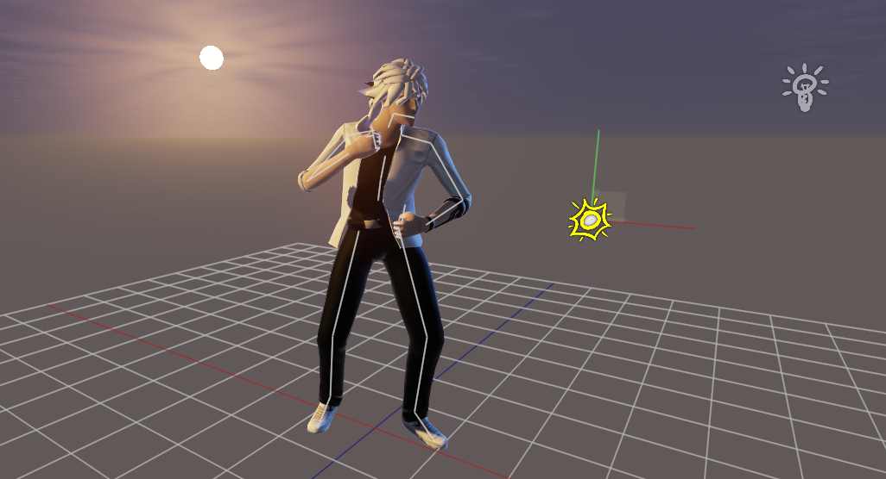

Thoughts on Skinning and LDS

I’m letting out some thoughts on using LDS memory as a means to optimize a skinning compute shader. Consider the following workload: each thread is responsible for animating a single vertex, so it loads the vertex position, normal, bone indices and bone weights from a vertex buffer. After this, it starts doing the skinning: for each bone index, load a bone matrix from a buffer in VRAM then multiply the vertex positions and normals by these matrices and weight them by the vertex bone weights. Usually a vertex will contain 4 bone indices and 4 corresponding weights. Which means that for each vertex we are loading 4 matrices from VRAM. Each matrix is 3 float4 vectors, so 48 bytes of data. We have thousands of vertices for each model we will animate, but only a couple of hundred bones usually. So should each vertex load 4 bone matrices from a random place in the bone array?
Instead, we can utilize the LDS the following way: At the beginning of the shader, when the vertex information is being loaded, each thread also loads one matrix from the bone array and stores it inside the LDS. We must also synchronize the group to ensure the LDS bone array has been complete. After all the memory has been read from VRAM, we continue processing the skinning: iterate through all bone indices for the vertex, and load the corresponding bone matrix from LDS, then transform the vertex and blend by the bone weights. We just eliminated a bunch of memory latency from the shader.
Consider what happens when you have a loop which iterates through the bone indices for a vertex: First you load the bone and you want to immediately use it for the skinning computation, then repeat. Loading from a VRAM buffer causes significant latency until the data is ready to be used. If we unroll the loop, the load instructions can be rearranged and padded with ALU instructions that don’t depend on those to hide latency a bit. But unrolling the loop increases register allocations (VGPR = Vector General Purpose Register, for storing unique data to the thread; buffer loads consume VGPR unless they are known to be common to the group at compile time, then they can be placed to scalar registers – SGPR) and can result in lower occupancy as we have a very limited budget of them. We also want a dynamic loop instead because maybe a vertex has fewer bones than the maximum, so processing could exit early. So having tight dynamic loop with VRAM load then immediately ALU instructions is maybe not so good. But once that loop only accesses LDS, the latency can be significantly reduced, and performance should increase.
But LDS does not come for free and it is also a limited resource, like VGPR. Let’s look at the AMD GCN architecture: We have a maximum of 64 KB of LDS for a single compute unit (CU), though HLSL only lets us use 32 KB in a shader. If a shader uses the whole 32 KB, it means that the shader can only be running two instances of itself on the CU. We have a bone data structure which is a 3×4 float matrix, 48 bytes. We can fit 682 bones into LDS and still have two instances of the compute shader operate in parallel. But most of the time we hardly have skeletons consisting of that many bones. In my experience, less than 100 bones should be enough for most cases, but we surely won’t use more than say 256 bones for a highly detailed model, either in real time apps. So say that our shader will declare an LDS bone array of 256 bones, and the thread group size is also 256, so each thread will load one bone into LDS. 256*48 bytes = 12 KB. This means that 5 instances of this shader could be running in parallel on a CU, so 5*256 = 1280 vertices processed. That is if we don’t exceed the max VGPR count of 65536 for a CU. In this case it means that a single shader must at maximum fit into the 51 VGPR limit (calculated as 65536 VGPR / 1280 threads). Most cases we will easily fit into even a 128 bone limit, so an LDS bone array size of 128 and thread group size of 128 threads will just be enough and be much easier on the GPU.
However, I can imagine a scenario, which could be worse with the LDS method, if there is a complicated skeleton, but small mesh referencing only a few of the bones. In this case when there is one skeleton for multiple meshes, maybe we should combine the meshes into a single vertex buffer and use an index buffer to separate between them, so this way a single dispatch could animate all the meshes, while they can be divided into several draw calls when needed.
It sounds like a good idea to utilize LDS in a skinning shader and it is a further potential improvement over skinning in vertex/geometry shader and doing stream out. But as with anything on the GPU this should be profiled on the target hardware which you are developing on. Right now my test cases were unfortunately maybe not the best assets there are, and a puny integrated Intel mobile GPU, but even so I could find a small performance improvement with this method.
Thank you for reading, you can find my implementation on GitHUB! Please tell me if there is any incorrect information.
UPDATE: I’ve made a simple test application with heavy vertex count skinned models, and toggleable LDS skinning: Download WickedEngineLDSSkinningTest (You will probably need Windows 10 to run it and DirectX 11)
Further reading: